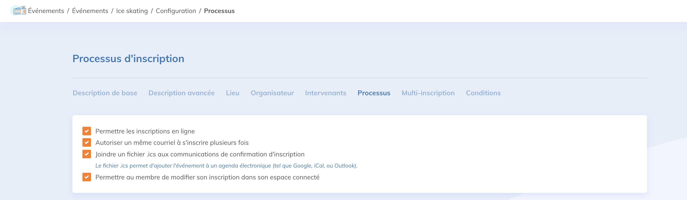
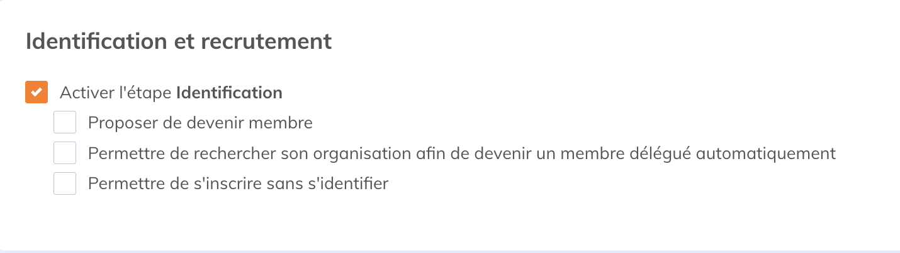
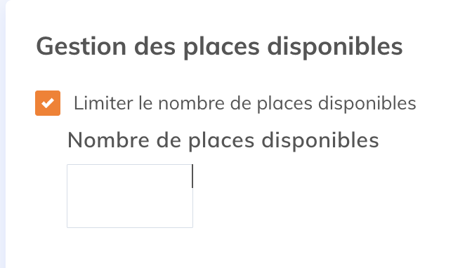
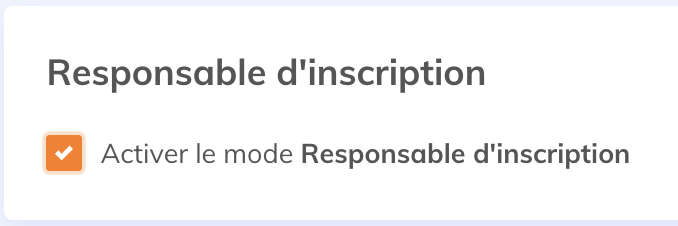
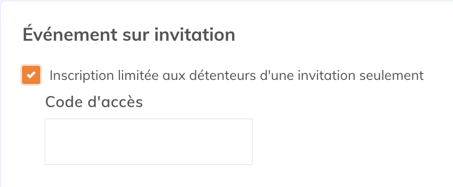
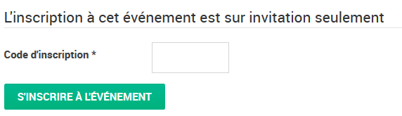
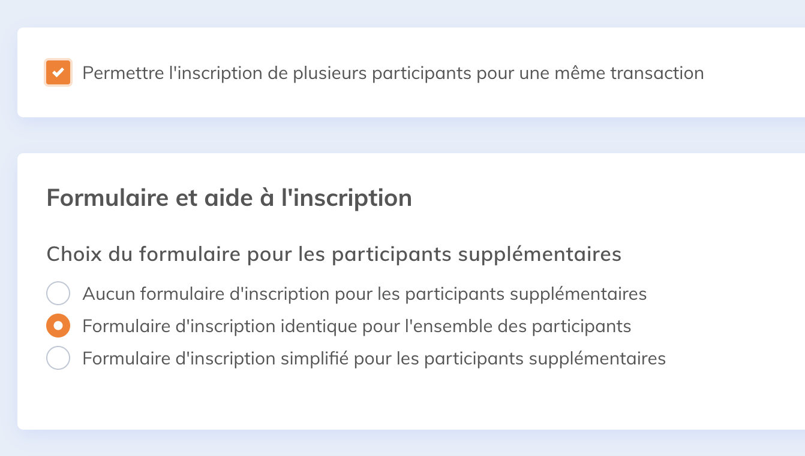
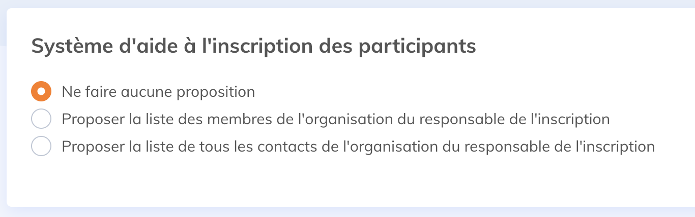
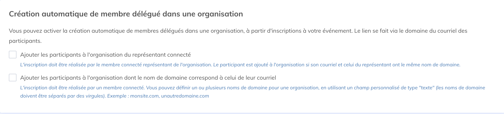
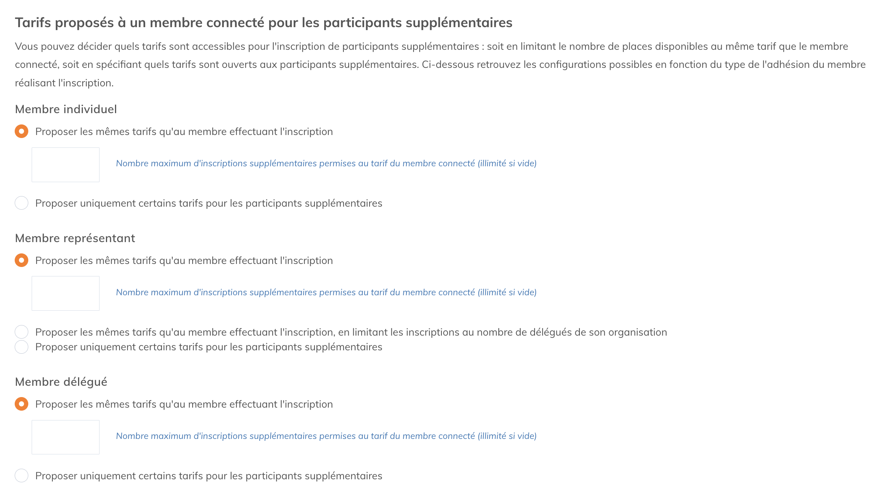

Selon vos besoins, plusieurs options s’offrent à vous pour simplifier ou préciser le formulaire d’inscription de vos événements en modifiant le processus d'inscription ou en ajoutant des configurations de multi-inscription à vos événements.
Dans cet article:
Configurer un processus d'inscription
Pour configurer le processus d'inscription d'un évènement, choisissez l'évènement et sélectionnez le menu Configuration. Les options se trouvent dans le sous-menu Processus.

Liste des champs
- Permettre les inscriptions en ligne - Si vous voulez afficher un événement sans que vos visiteurs puissent s’inscrire, par exemple, si les inscriptions sont gérées via un autre site, vous pouvez décocher cette case et le bouton S’inscrire n’apparaîtra plus.
- Autoriser un même courriel à s'inscrire plusieurs fois - limitez une inscription par adresse courriel en décochant cette case.
- Joindre un fichier .ics aux communications de confirmation d'inscription - Pour que les participants puissent ajouter l'événement à leur calendrier Outlook ou Gmail, par exemple.
- Permettre au membre de modifier son inscription dans son espace connecté - Si le participant est membre, il pourra se connecter à son espace membre pour modifier son inscription à l'événement.
Identification et recrutement
-
Activer l’étape identification - permet aux membres de se connecter avec leur compte Yapla, pour profiter de tarifs préférentiels. Ces cases vous permettent de définir si votre événement est limité à vos membres ou non.

- Proposer de devenir membre - ajoutera un bouton vers le formulaire Devenir membre.
- Permettre de rechercher son organisation afin de devenir un membre délégué automatiquement - Si votre organisation gère des organisations avec beaucoup de membres, cette fonction permettra aux employés de ces organisations de s’inscrire en tant que membres, même s’ils n’ont pas encore de compte dans Yapla.
-
Permettre de s’inscrire sans s'identifier - permets de poursuivre l’inscription sans se connecter. Si vous voulez limiter l'inscription à cet événement à vos membres seulement, laissez cette case vide.

Gestion des places disponibles
- Limiter le nombre de places disponibles - permets de déterminer le nombre maximum de places disponibles. Une fois ce nombre atteint, il ne sera plus possible de l’inscrire à l’événement.

Responsable d'inscription
-
Activer le mode responsable d’inscription - permets à un responsable de compléter l’inscription sans participer à un événement.

Événement sur invitation
-
Inscription limitée aux détenteurs d'une invitation seulement - permets de créer un code d’accès qui devra être renseigné par vos participants.

- Sur le site web :

Configurer la multi-inscriptions
Pour configurer les multi-inscriptions, rendez-vous dans le sous-onglet multi-inscription.
-
Permettre l'inscription de plusieurs participants pour une même transaction - Cette option permet d’activer l’inscription de plusieurs participants à la fois.
- Aucun formulaire d'inscription pour les participants supplémentaires - seul le nombre de participants supplémentaires doit être renseigné.
- Formulaire d'inscription identique pour l'ensemble des participants - Le même formulaire devra être rempli pour chaque participant (Contexte: Ajout d’une inscription - Site Web).
-
Formulaire d'inscription simplifié pour les participants supplémentaires - Les participants supplémentaires auront un formulaire différent (Contexte: Ajout d’une inscription simplifiée) pouvant contenir moins de champs ou des champs différents.

-
Système d'aide à l'inscription des participants (Forfait Premium)
- Proposer la liste des membres de l'organisation du responsable de l'inscription - Une boîte est ajoutée dans le processus d'inscription. Quand le compte a des organisations et que le représentant est connecté, il peut choisir parmi les membres de l'organisation afin de préremplir le formulaire.
-
Proposer la liste de tous les contacts de l'organisation du responsable de l'inscription - Une boîte est ajoutée dans le processus d'inscription. Quand le compte a des organisations et que le représentant est connecté, il peut choisir parmi les contacts de l'organisation afin de préremplir le formulaire.

-
Création automatique de membres délégués dans une organisation - Si vous souhaitez effectuer la création de membres délégués dans une organisation automatiquement lors de leur inscription, sélectionnez la procédure souhaitée.

-
Tarifs proposés à un membre connecté pour les participants supplémentaires
- Proposer les mêmes tarifs qu'au membre effectuant l'inscription: tous les participants supplémentaires auront le même tarif. Vous pouvez choisir une limite d'inscription supplémentaire. Le membre effectuant les inscriptions est comptabilisé dans la limite d'inscriptions permises.
-
Proposer uniquement ces tarifs pour les participants supplémentaires: choisissez quels tarifs seront disponibles pour les participants supplémentaires.

Configurez les tarifs de la même manière pour les participants supplémentaires d'un représentant et d'un délégué.

Commentaires
Vous devez vous connecter pour laisser un commentaire.